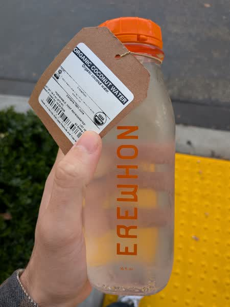

October 2026 · 16 fl oz · Still · Thailand · Unpasteurized · No Added Sugar · USDA Organic
Ranked 6th of 42 coconut waters I have scored · below Trader Joe's Organic (7.8) · above Harmless Harvest Sparkling (7.4). See the full ranking.
This is Erewhon's "store brand" coconut water. It's made in a central facility in Los Angeles and then distributed to all the stores in the region so there might be a decent amount of variation between batches. Online they claim to use organic young coconuts but that's about as much information as they provide. If I had to guess this is not a Nam Home coconut but it could still be Thai or Vietnamese. It's also the most expensive I've ever reviewed, but the reviews on this website are agnostic of price.
Refreshing and light, with a bit more sweetness than typical and a relatively one-dimensional but pleasant flavor profile. You're not getting much of the depth that you might expect from a very fresh coconut water. I'm not sure if it's some quirk of how they process the coconuts before they extract the water, or if they even extract the water in Los Angeles, it's tough to say. However, I must admit it's a tasty coconut water.
These coconuts are grown in habitats threatened by palm oil deforestation. If you find this site useful, consider donating to the Rainforest Action Network.